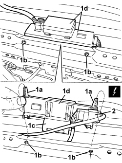
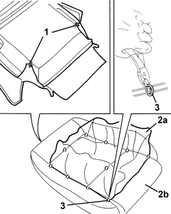

7045D21 FRONT SEAT CUSHION COVER, LEFT OR RIGHT - R.R. WITH SEAT REMOVED
- Path
- Procedures > 70 FITTINGS > 7045 FRONT SEATS > 7045D FRONT SEAT TRIM/PADDING > 7045D21 FRONT SEAT CUSHION COVER, LEFT OR RIGHT - R.R. WITH SEAT REMOVED
- Kind
- repair procedure (removal / refitting; the operation number is the code)
- Applies to
- all engines; all production periods
- Interactive page
- https://sloeber94.github.io/elrnDB/alfa/159/en/#/939011315
Applies to: all engines; all production periods
 Removing
Removing
 Refitting
RefittingOp. 7045A24 FRONT SEAT BACKREST ANGLE ADJUSTMENT KNOB (ONE), LEFT OR RIGHT - R.R.
Op. 7045A56 DRIVER'S SEAT HEIGHT ADJUSTMENT DEVICE CONTROL LEVER - R.R
Op. 7045A43 FRONT SEAT EXTERIOR GUARD (ONE), LEFT OR RIGHT - R.R
1. Disconnect the backrest trim links.

Applies to: all engines; all production periods
1. Disconnect outer cushion trim retainers (1a) from seat frame profile (1b).
2. Release the cushion trim retainer.
3. Release rear part (3a) of cushion trim from retainers (3b).

Applies to: all engines; all production periods
1. Undo retainers (1a) from seats (1b); release retainer (1c) from the frame and move control unit with mount (1d).
2. Detach the electrical connection for the cushion heater pad.
Description | Component |
|---|---|
LEFT SEAT HEATER | |
PASSENGER SEAT HEATER |
-Remove the cushion with padding.

Applies to: all engines; all production periods
- If necessary, separate the cushion trim from the padding as indicated below.
1.Cut the lower retainers with shears.
2. Prise up trim (2a) and release from padding border (2b).
3. Use cutters to cut all the upper backrest trim retainers.
4. Separate trim (2a) from padding (2b).

Applies to: all engines; all production periods
Refitting
Removing- Check that the cushion cover is not damaged.
- If removed, position the cushion cover padding and crimp the retainers using special pliers.
- Fit the cover on the padding perimeter and crimp the lower retainers using special pliers.
- Position the cushion trim with padding on the seat frame.
- Secure the electrical connection for the cushion heater pad.
- Place the thermostat with mount in position and attach the retainers.
- Attach the rear part of the cushion trim to the retainers.
- Do up the cushion trim retainer.
- Connect the cushion trim outer retainers to the seat frame profile.
- Connect the backrest trim links.
Op. 7045A43 FRONT SEAT EXTERIOR GUARD (ONE), LEFT OR RIGHT - R.R
Op. 7045A56 DRIVER'S SEAT HEIGHT ADJUSTMENT DEVICE CONTROL LEVER - R.R
Op. 7045A24 FRONT SEAT BACKREST ANGLE ADJUSTMENT KNOB (ONE), LEFT OR RIGHT - R.R.
Applies to: all engines; all production periods; only with equipment: Electric seats
Removing
RefittingOp. 7045A43 FRONT SEAT EXTERIOR GUARD (ONE), LEFT OR RIGHT - R.R
1. Disconnect the backrest trim links.
Applies to: all engines; all production periods; only with equipment: Electric seats
1. Disconnect outer cushion trim retainers (1a) from seat frame profile (1b).
2. Release the cushion trim retainer.
3. Release rear part (3a) of cushion trim from retainers (3b).
Applies to: all engines; all production periods; only with equipment: Electric seats
1. Undo retainers (1a) from seats (1b); release retainer (1c) from the frame and move control unit with mount (1d).
2. Detach the electrical connection for the cushion heater pad.
Description | Component |
|---|---|
LEFT SEAT HEATER | |
PASSENGER SEAT HEATER |
-Remove the cushion with padding.
Applies to: all engines; all production periods; only with equipment: Electric seats
- If necessary, separate the cushion trim from the padding as indicated below.
1.Cut the lower retainers with shears.
2. Prise up trim (2a) and release from padding border (2b).
3. Use cutters to cut all the upper backrest trim retainers.
4. Separate trim (2a) from padding (2b).
Applies to: all engines; all production periods; only with equipment: Electric seats
Refitting
Removing- Check that the cushion cover is not damaged.
- If removed, position the cushion cover padding and crimp the retainers using special pliers.
- Fit the cover on the padding perimeter and crimp the lower retainers using special pliers.
- Position the cushion trim with padding on the seat frame.
- Secure the electrical connection for the cushion heater pad.
- Place the thermostat with mount in position and attach the retainers.
- Attach the rear part of the cushion trim to the retainers.
- Do up the cushion trim retainer.
- Connect the cushion trim outer retainers to the seat frame profile.
- Connect the backrest trim links.
Op. 7045A43 FRONT SEAT EXTERIOR GUARD (ONE), LEFT OR RIGHT - R.R
Topics linked from this page (5)
- 7045A24 FRONT SEAT BACKREST ANGLE ADJUSTMENT KNOB (ONE), LEFT OR RIGHT - R.R.
- 7045A43 FRONT SEAT EXTERIOR GUARD (ONE), LEFT OR RIGHT - R.R
- 7045A56 DRIVER'S SEAT HEIGHT ADJUSTMENT DEVICE CONTROL LEVER - R.R
- O040 LEFT SEAT HEATER
- O041 PASSENGER SEAT HEATER
Topics that link to this page (7)
- 7045A86 FRONT SEAT FRAME (ONE), LEFT OR RIGHT, R.R.
- 7045D10 TRIM FOR ONE FRONT SEAT LH OR RH - R.R
- 7045D11 TRIM OF ONE FRONT SEAT LH OR RH RR WITH SEAT REMOVED
- 7045D18 FRONT SEAT CUSHION SPRINGING (ONE), LH OR RH - R R
- 7045D20 FRONT SEAT CUSHION COVER, LEFT OR RIGHT - R.R.
- 7045M22 HEATER PAD FOR FRONT SEAT CUSHION, LEFT OR RIGHT - R.R. FOLLOWING ELECTRICAL CIRCUIT CHECK
- 7065A34 PASSENGER PRESENCE SENSOR ON FRONT SEAT FOR INDICATING SEATBELT UNFASTENED R R